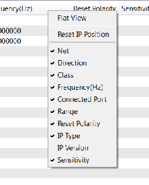

The Ports tab enables you to view
the names, nets, directions, ranges, classes, IP types, and classifications.
It also allows you to add external ports.
- Name lists the IP names.
- Connected Port shows all the connected
port information.
- Direction lists the direction of your
IP (I/O).
- Range lists the range of your IP.
- Class lists the class of your IP.
- Frequency (Hz) displays the frequency
of your IP, in Hertz.
- Reset Polarity displays the polarity
of Reset ports.
- Sensitivity lists the Sensitivity of
your IP.
- IP Type lists the IP Type.
To Connect a Port
- click in the Connected Port column of
a port. Two drop-down boxes appear.
- Select an IP instance from the first drop-down list. The second
drop-down list pre-populates, showing the available ports to which
a connection can be made.
- Select a port from the second drop-down list.
- Press the Enter key to commit your changes,
or the Esc key to cancel them.
Note You can remove a connection by clicking the Delete Connection button.
For ports that can
have multiple connections, the Add New Connection option appears. Click this to add more connections.
Enabling the Net Column in Ports View
As
an alternative to connecting ports using the Connected
Port column, you can use the Net column to view and change the port connections.
To enable
the Net column, right-click the header bar
of the Ports tab. In the list of columns to show, click to select Net.

© Copyright 1995–2012, Xilinx®
Inc. All rights reserved.